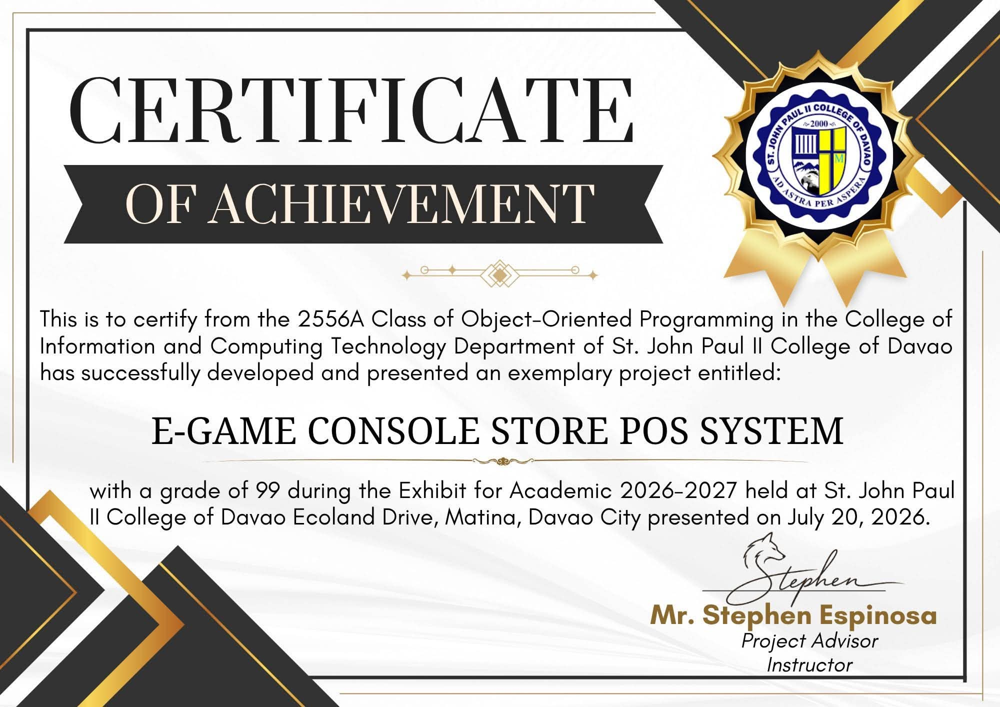

01
Customer Churn Prediction
A classification pipeline that predicts which subscribers are likely to cancel, built on a public telecom dataset and tuned for precision over raw accuracy.
- Python
- scikit-learn
- pandas
- SQL
Hello, I'm
AI/ML Engineer
To Beyond and Infinity
I build machine learning systems that turn messy data into clear decisions — from data pipelines and model training to the interfaces people actually use.
About
I'm an AI/ML engineer who likes problems that are slightly too big for one sitting: a messy dataset, an unclear question, and a model that has to hold up in the real world.
Most of my work happens in Python — loading and cleaning data, training and comparing models, and then wiring the result into something a person can actually use. Java shows up when a problem needs structure and scale, and SQL when the answer is already hiding in a table.
When I'm not training models I'm usually reading about space operas, hunting for good action scenes, or arguing that the best engineering books are also the best fantasy books.
Key skills
Selected work
Four end-to-end builds, from raw data to something you can click on.
01
A classification pipeline that predicts which subscribers are likely to cancel, built on a public telecom dataset and tuned for precision over raw accuracy.
02
An interactive dashboard that reads raw sales exports, joins them into one clean table, and answers the questions a manager actually asks on a Monday morning.
03
A fine-tuned convolutional network that sorts images into categories, with a confusion matrix used to decide what the model is actually good at.
04
A recommender that blends collaborative filtering with content features so it can suggest something new instead of just replaying what someone already liked.
Achievements
Recognitions and certificates earned through software development projects.
Certificate of Achievement for successfully developing and presenting an exemplary Object-Oriented Programming project during the Academic Exhibit 2026–2027 at St. John Paul II College of Davao.

The path so far
2024 — Present
Building machine learning projects using Python, data analysis, and AI technologies. Developing models, experimenting with algorithms, and creating practical AI-powered applications.
2023 — 2024
Worked with Python, SQL, and data processing workflows to clean datasets, analyze information, and develop data-driven solutions.
2020 — 2024
Focused on software development, database systems, programming fundamentals, and emerging technologies including artificial intelligence and machine learning.
2019
Wrote my first programs and developed a passion for building software, solving problems, and exploring technology.
Contact
Open to internships, freelance ML work, and interesting problems. My inbox is always open.